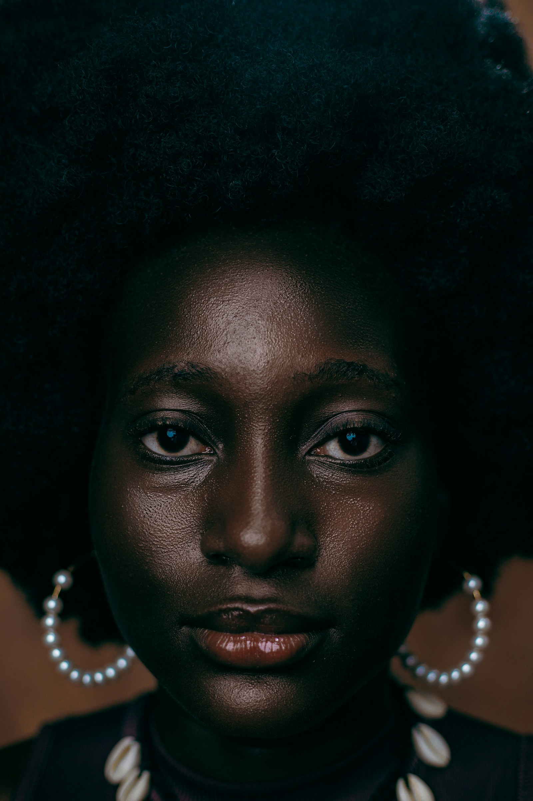

NOTE / 02 PEOPLE & PORTRAITS
A portrait that feels like you.
You don’t need a collection of poses. You need enough space to settle, and a direction that makes sense to you.

Decide what you want to recognise.
Before a portrait session, think about how you want the image to feel when you see it later. Open and approachable? Thoughtful and composed? Playful? A portrait for a creative profile may ask for a different energy from a photograph you want to keep for yourself.
Share what you tend to like or dislike about being photographed. Perhaps a direct gaze feels comfortable, or perhaps a little movement helps you settle. This is useful context for a conversation, not a list of things you must fix about yourself.
01 / THE DIRECT GAZE

Simple framing can leave more room for expression. Here, the dark background makes the connection with the viewer the centre of the picture.
Wear something you can inhabit.
Start with clothes that feel familiar on your body. Notice how they move when you sit, turn, or raise your hands. A garment can look wonderful on a hanger and ask for too much attention in a portrait. Bring a small selection of options and talk through the shapes and colours together.
Consider where the portrait will be used when choosing accessories and styling. A strong necklace, a bright colour, or a particular jacket can be part of your identity. The question is whether it helps tell the story you want the image to tell.
The small gestures you recognise in yourself are often the ones worth keeping.
A NOTE FROM FORME
Let the first few minutes be a beginning.
You do not have to arrive ready to produce a final photograph immediately. Use the opening conversation to get comfortable with the space and the pace of the session. Clear, small directions are easier to work with than a vague instruction to look natural.
A turn of the shoulders, a change of where you look, or a moment with your hands at rest can offer a different feeling. You can say when something feels awkward. Portrait-making is a collaboration, and your experience in front of the camera belongs in that collaboration.
02 / STILLNESS & GESTURE


There is more than one way to feel present. A slight turn of the face and a small gesture of the hands can each give a portrait its own rhythm.
Look for recognition in the edit.
When reviewing photographs, try looking beyond the single detail you usually inspect first. Notice the whole image: expression, posture, hands, and the relationship with the viewer. Which frames feel like someone you recognise? Which communicate the quality you hoped for at the beginning?
A portrait does not have to be perfectly symmetrical or completely still to feel resolved. Sometimes a small shift in expression is what gives the picture its life. The aim is a photograph you can stand behind, in more ways than one.
03 / CHARACTER IN THE CLOSE FRAME

Texture, a close crop, and an attentive gaze give this portrait its character. The details work together, rather than needing to be inspected one by one.
An original studio note for the FORME website concept. Explore the visual directions or meet the photographers in the image credits.